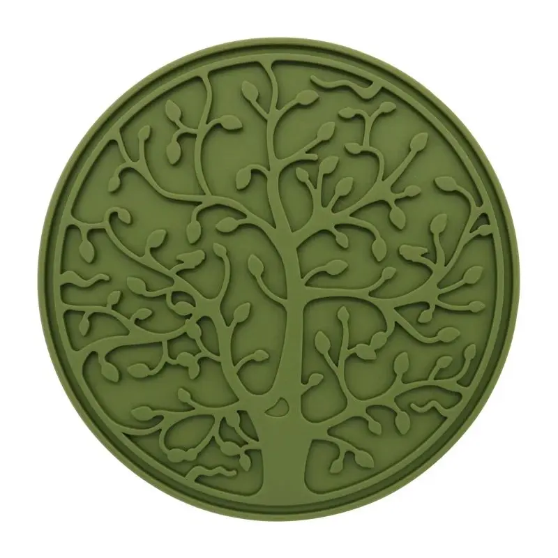
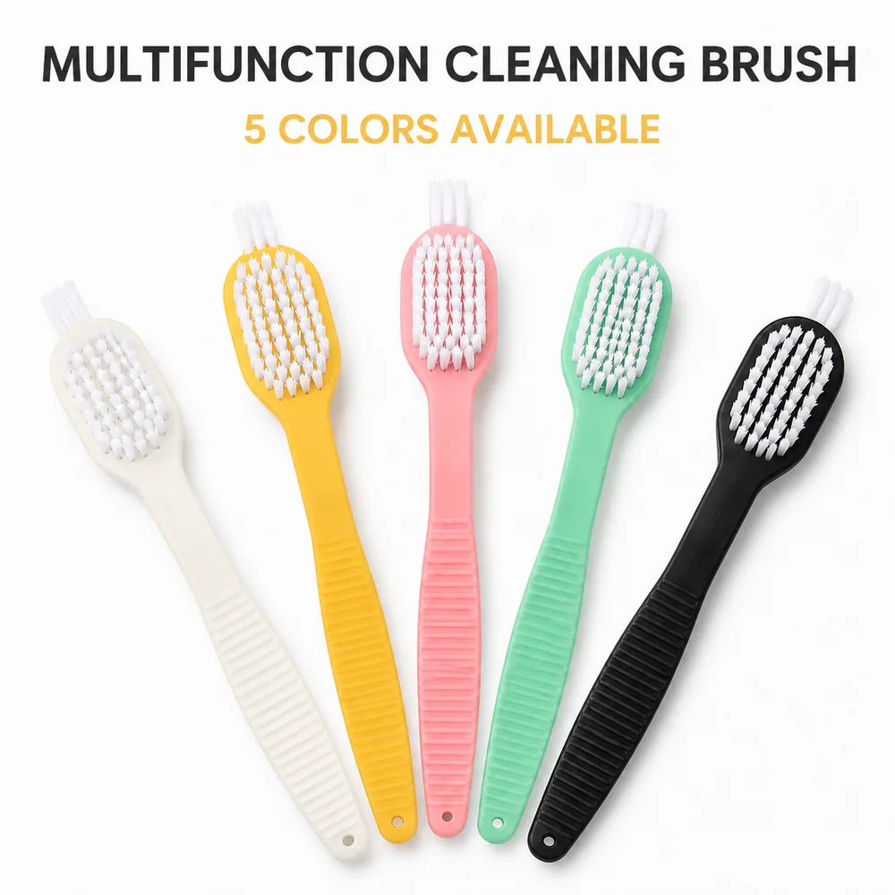

A lick mat is only as good as what you spread on it. Thin, watery fillings run straight off the mat; thick, sticky ones take twenty minutes to spread and another ten to scrub off. This guide covers what actually works, how the filling should match the texture of the mat, and the two complaints we hear most from buyers: mats that slide across the floor, and ridges that never come properly clean. Both have practical fixes.
Quick Answer: 12 Fillings That Work
If you only need the short version, this is the table we would hand to a new owner. “Best texture” assumes a silicone mat with raised patterns; a flat silicone plate works for most of them too, just with less challenge.
| Filling | Consistency | Best texture | Freeze? |
|---|---|---|---|
| Peanut butter (xylitol-free) | Thick, sticky | Honeycomb or fine ridges | Yes |
| Greek yogurt | Thick, spreadable | Shallow channels | Yes |
| Plain pumpkin purée | Thick | Deep cells | Yes |
| Wet dog food or pâté | Soft, holds shape | Deep cells | Yes |
| Raw or cooked mince, mashed | Dense | Deep cells | Yes |
| Mashed banana | Thick, sweet | Honeycomb | Yes |
| Kefir | Runny | Shallow channels only | Yes, freeze flat |
| Cottage cheese | Lumpy, wet | Honeycomb | Yes |
| Mashed sweet potato | Thick | Deep cells | Yes |
| Baby food (no onion or garlic) | Smooth | Any | Yes |
| Bone broth, thickened | Liquid | Shallow channels | Yes |
| Soaked kibble | Soft chunks | Deep cells | No |
Three Textures, Three Kinds of Filling
The reason a mat works is not magic: it is surface area. A flat bowl lets a dog take a mouthful; a textured mat makes the tongue do the work, and the texture decides which fillings stay put.
Fine honeycomb or small ridges. These hold thin layers of sticky food: peanut butter, yogurt, cottage cheese, banana. The pattern spreads the load across hundreds of small pockets, so the dog takes a little at a time. Thin, watery food still runs off, so use a thicker version.
Deep cells or cups. These are built for volume: wet food, pâté, mince, pumpkin, soaked kibble. A deep cell holds a full meal rather than a smear, which is why the square slow feeder mats are the better format for dinner and the fine-ridge mats are the better format for a treat.
Long shallow channels. These suit anything that still flows a bit: kefir, thinned yogurt, bone broth. The channel slows the flow without trapping liquid in a pocket the dog cannot reach.
If you sell both formats, tell your customers which one is for dinner and which is for a treat. Most returns come from using the wrong one, not from a faulty product.

Five Fillings That Do the Job
1. Peanut butter (xylitol-free)
The classic because it sticks to anything and lasts a long time on the mat. Two rules. First, read the label: xylitol is toxic to dogs and appears in some “low sugar” and diet peanut butters. Second, spread it thin. A thick layer of peanut butter on a mat is a lot of fat in one sitting and takes an age to clean out of the cells.
2. Greek yogurt
Thicker than plain yogurt, so it stays in the channels instead of running to the edge. Good for freezing: spoon it in, smooth the top, freeze flat. Choose plain, unsweetened yogurt, and check the label for xylitol in anything marketed as a dessert flavour.
3. Plain pumpkin purée
The pie filling, not the spiced pie mix. Thick enough to hold its shape in deep cells, freezes well, and dogs generally like it. Pumpkin pie spice mixes often contain ingredients you do not want on a mat, so keep the plain tin separate.
4. Wet dog food or pâté
The most complete option if the mat is standing in for a meal rather than a treat. Pâté holds its shape, so it works in deep cells; shredded food in gravy is better in shallow channels, and the gravy still runs, so serve it fresh rather than frozen.
5. Banana and oat mash
Mash a ripe banana with a spoon of plain oats and a little water until it holds together. Cheap, quick, and it freezes into a texture that takes real effort to lick off. Good for a hot day, and easy to portion.
What Not to Put on a Lick Mat
Some of the things people spread on mats are genuinely dangerous. These are the ones worth a hard no:
- Anything containing xylitol. It is toxic to dogs. It appears in sugar-free peanut butter, some chewing gums and some “healthy” spreads, so read the label every time.
- Chocolate, including cocoa powder. Toxic to dogs at relatively small amounts.
- Grapes and raisins. Toxic, and the reaction is unpredictable, so there is no safe portion.
- Onion, garlic, leek and chives. Common in human leftovers and in some baby foods.
- Cooked bones. They splinter; a mat is not the place for them.
- Macadamia nuts. Toxic to dogs.
- Salty processed meat, bacon and cured sausage. Too much salt, and the fat is hard to clean out of a mat.
If a dog has a medical condition, is on a prescription diet, or is prone to stomach upsets, the filling should come from the vet rather than from a blog. A mat is a delivery method, not a treatment.
Why the Mat Slides, and What Actually Fixes It
This is the complaint we hear most, and it is almost never a manufacturing defect. Suction only works on a smooth, non-porous surface. Four things break it:
- The surface. Tiles, glass, stainless steel and polished stone hold suction. Carpet, wood grain, textured vinyl and grout lines do not.
- Oil or film on the surface. A floor with cooking spray, floor cleaner or dog saliva on it will not hold. Wipe it, let it dry, then press.
- Air under the cup. Press from the middle outward and hold for a few seconds so the air escapes. Slapping it down traps air and it lets go under load.
- A warped mat or a raised edge. If the rim lifts, the cup cannot seal. Store mats flat, not folded.
How to check before you buy: press the mat onto a clean tile or a glass surface, wait a few seconds, then lift straight up from one corner. A mat with real suction resists; a weak one pops off immediately. We demonstrate it the same way, on glass, because it is the only test a buyer can repeat at home.
For bowls, the same rules apply to the base. A wide, flat base with several small cups grips better than one large cup, and it is more tolerant of a slightly uneven floor.
The Cleaning Problem Nobody Mentions
The second complaint is that mats and bowls never come properly clean. The cause is the same feature that makes them work: deep cells and narrow channels trap dried food, and a sponge cannot get into them.
The order that works:
- Scrape while it is still soft. A silicone scraper lifts the bulk out of the cells in a few passes. This is the step most people skip, and it is the one that matters.
- Brush the pattern. A small brush with stiff bristles gets into the corners the scraper cannot reach. A soft kitchen brush just pushes the residue around.
- Wash with warm soapy water, or use the top rack of a dishwasher. Silicone tolerates both.
- Dry fully before storing, and store flat rather than folded. Damp mats stored in a stack smell, and the smell transfers to the next meal.
This is why a scraper and a brush belong with the mat rather than in a separate aisle. Two accessories solve both complaints at once: the scraper spreads fillings evenly and lifts residue, the brush cleans the pattern.

If You Sell Lick Mats
For brands and Amazon sellers, the filling guide is also the merchandising guide. Two things follow from it.
Sell the set, not the mat. A mat or bowl with a silicone scraper and a brush answers both complaints before they become reviews. It also raises the average order value without adding a new product category, and it is easier to photograph as a gift-ready bundle.
Say which format is for which filling. Fine-ridge mats for spreads, deep-cell mats for meals, and a line in the listing that explains the difference. Listings that separate “dinner” from “treat” get fewer returns than listings that describe every mat as suitable for everything.
We make the mats, the bowls, the scraper and the brush, so a set can be colour-matched and packed as one SKU. If you are building a lick mat range, the starting point is the lick mat range; the matching bowl and insert formats are in slow feeders. Custom colours and packaging are quoted per order.
Frequently Asked Questions
How often can I give a lick mat?
Once a day is typical for a frozen mat, less if the filling is rich. A mat with peanut butter is a lot of fat, so it works better as an occasional treat than as a daily routine.
Can puppies use a lick mat?
Yes, with a shallow filling and supervision. Puppies tend to bite at the mat rather than lick, so check the edges for damage after each use and replace the mat if it is torn.
How long can a filled mat sit out?
Treat it like food. A yogurt or meat filling should not sit at room temperature for hours; put the mat in the fridge or freezer if it is not going to be used straight away.
Should I supervise?
For the first few uses, yes. Some dogs try to swallow the mat or chew the corners. A mat is a feeding accessory, not a chew toy, and it should be taken away once the food is gone.
The mat will not stick. What now?
Check the surface first: tiles, glass and stainless steel hold suction, carpet and textured wood do not. Clean the surface, press from the middle outward, and hold for a few seconds. If it still lifts, the mat may be warped from being stored folded.